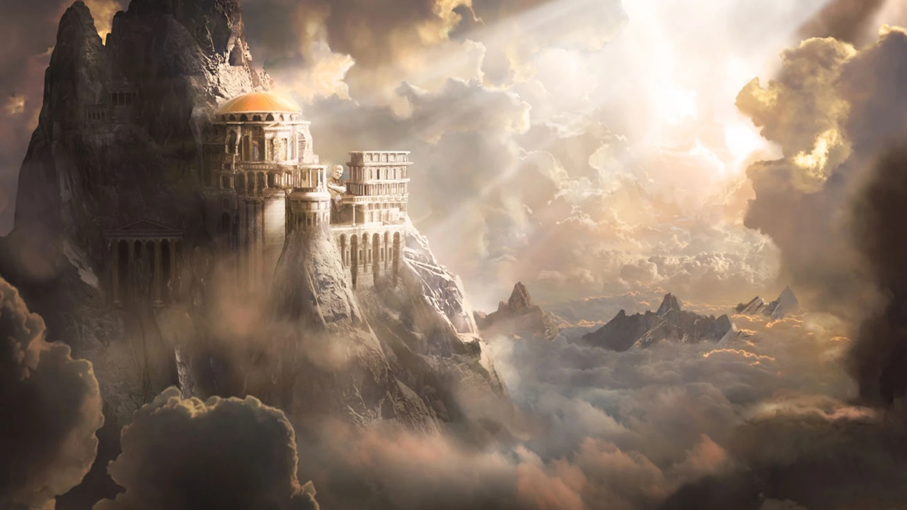
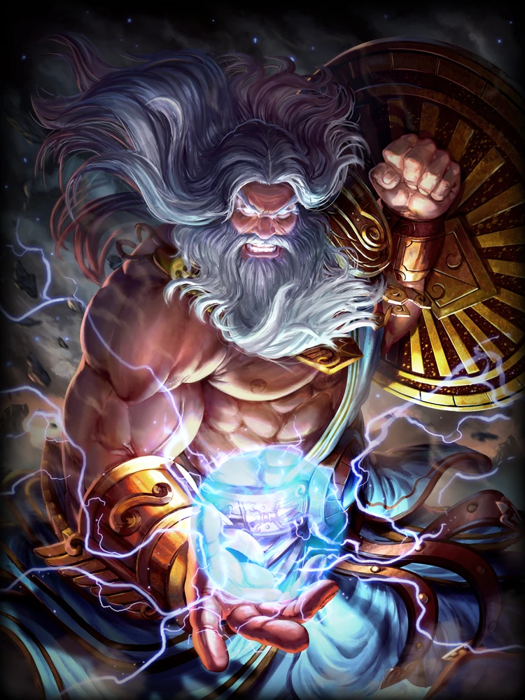
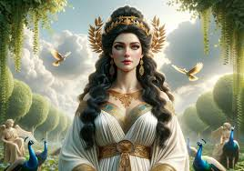
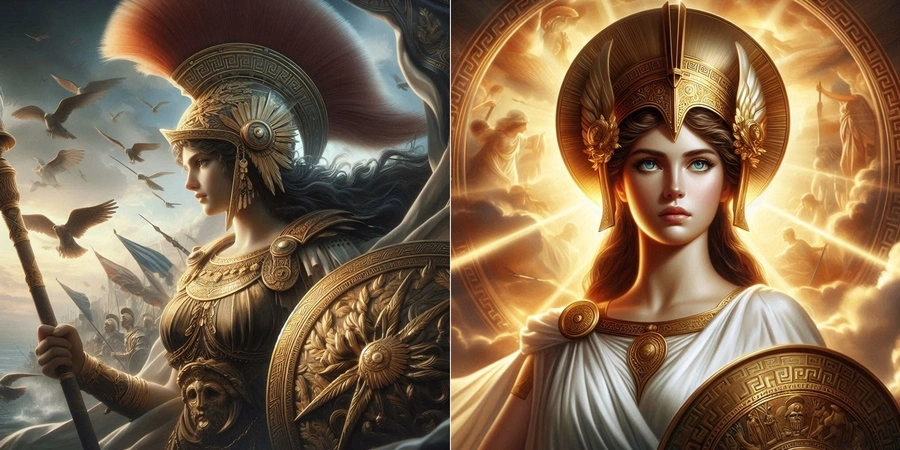
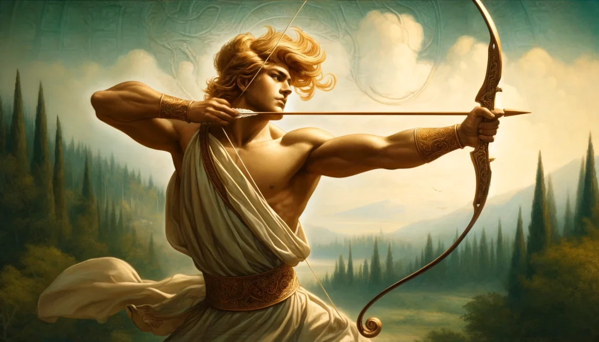
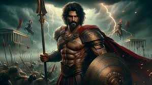
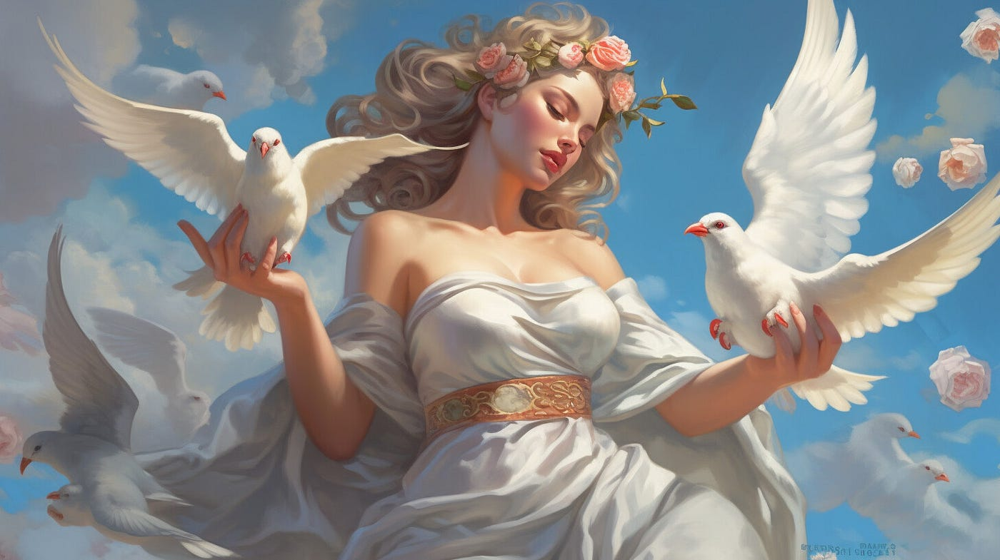
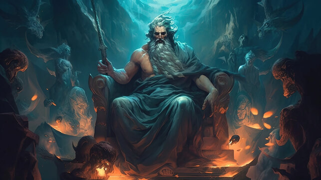

Greek Mythology
Greek mythology is a fascinating and complex collection of stories from ancient Greece.
It involves a pantheon of gods and goddesses, each with their own personalities, domains, and relationships.
Olympus

Mount Olympus is a significant feature in Greek mythology, regarded as the home of the Olympian gods. It is depicted as a majestic, cloud-shrouded mountain where the gods reside in splendor and where divine decisions are made. The principal deities of Olympus include Zeus, Hera, Poseidon, Athena, and Apollo, among others.
In classical mythology, Olympus is portrayed as a place of great beauty and eternal bliss, contrasting sharply with the mortal world below. It's not just a physical location but also a symbol of divine power and the ultimate authority in the pantheon of Greek gods.
story
In ancient times, when humans lived in darkness and ignorance, the gods on Mount Olympus were well aware of the power and potential of fire.
Fire was a divine element that could provide warmth, light, and the means to cook food, and it was a precious gift that was reserved for the gods themselves.
Prometheus, a Titan and a friend to humanity, saw the suffering of humans and felt pity for them. He admired their potential and believed they deserved more than the primitive existence they had.
In defiance of the chief god, Zeus, Prometheus decided to steal fire from Olympus and give it to humankind.
Under the cover of darkness, Prometheus sneaked into the workshop of Hephaestus, the god of fire and blacksmithing, and took a burning ember from the forge.
He carried the ember down to Earth and gave it to humans, teaching them how to use it.
With fire, humanity could now cook food, forge tools, and build civilizations.
The gift of fire revolutionized human life and marked the beginning of a new era for mankind.
The Consequences
Zeus was furious when he discovered that Prometheus had defied him by giving fire to humans. He saw this act as a direct challenge to his authority and a violation of the divine order.
As punishment, Zeus ordered Prometheus to be bound to a rock on Mount Caucasus (not Olympus, but the punishment was related to the broader mythological context).
There, an eagle was sent to eat Prometheus’s liver every day.
Because Prometheus was immortal, his liver would regenerate each night, making the torment eternal.
Heracles and Redemption
Prometheus’s suffering continued until he was eventually rescued by Heracles (Hercules), one of the greatest heroes of Greek mythology.
Heracles, on one of his many quests, encountered Prometheus and, with Zeus’s approval, freed him from his chains.
This act of heroism was seen as a form of redemption for Prometheus, although the consequences of his defiance lingered in the complex relationship between gods and mortals.
Greek gods
Zeus

The king of the gods, Zeus rules the sky and thunder. He is known for his numerous affairs and many offspring.
Hera

Zeus’s wife and queen of the gods. She is the goddess of marriage and family, often depicted as jealous and vengeful, especially towards Zeus’s lovers and illegitimate children.
Poseidon

Zeus’s brother and god of the sea, earthquakes, and horses. He wields a trident and is known for his temperamental nature.
Demeter
The goddess of agriculture and the harvest, she is the mother of Persephone, whom Hades abducted to the Underworld.
Athena

The goddess of wisdom, warfare, and craft. She sprang fully grown and armored from Zeus’s forehead and is known for her strategic skill and just nature.
Apollo

The god of the sun, music, prophecy, and healing. He is associated with the Oracle of Delphi and is the twin brother of Artemis.
Artemis

The goddess of the moon, hunting, and virginity. She is known for her independence and protection of wildlife.
Ares

The god of war and combat. Unlike Athena, who represents strategic warfare, Ares embodies the chaotic and brutal aspects of battle.
Aphrodite

The goddess of love, beauty, and desire. She is often depicted as emerging from the sea foam and is associated with many love affairs.
Hermes

The messenger of the gods, god of trade, thieves, and travel. He is known for his speed and cunning and is often depicted with winged sandals.
Hades

The god of the Underworld and the dead. He rules over the realm of the deceased and is often misunderstood as a malevolent figure, though he is more of a stern but just ruler.
Dionysus

The god of wine, revelry, and ecstasy. He is associated with the joys and chaos of life and is often depicted with a thyrsus (a staff topped with a pine cone) and surrounded by a retinue of followers.
About
Greek mythology is a rich collection of myths and legends that originate from ancient Greece.
These stories were integral to Greek culture and religion, serving to explain natural phenomena, human behavior, and the origins of their world.
The myths revolve around a pantheon of gods, goddesses, heroes, and mythical creatures, each with their own distinct personalities and domains.
The Greek gods, who resided on Mount Olympus, were central to these myths.
They interacted with humans in complex ways, influencing their fates and engaging in both benevolent and malevolent actions.
Key figures include Zeus, the ruler of the gods; Athena, the goddess of wisdom; and Apollo, the god of prophecy and the sun.
These deities were often depicted with human-like traits, such as love, jealousy, and revenge, making their stories relatable and compelling.
Heroes like Heracles (Hercules), Perseus, and Theseus played crucial roles in Greek myths, undertaking epic quests and performing great feats that often tested their strength, courage, and cunning.
Their adventures were not only entertaining but also conveyed moral lessons and cultural values.
Mythical creatures such as the Hydra, the Minotaur, and the Sirens added to the rich tapestry of Greek mythology, representing various challenges and symbolic themes.
These stories were passed down through oral tradition and later recorded by poets like Homer and Hesiod.
Overall, Greek mythology offered explanations for the world’s mysteries and human experiences, and it has profoundly influenced Western literature, art, and culture, continuing to captivate imaginations to this day.